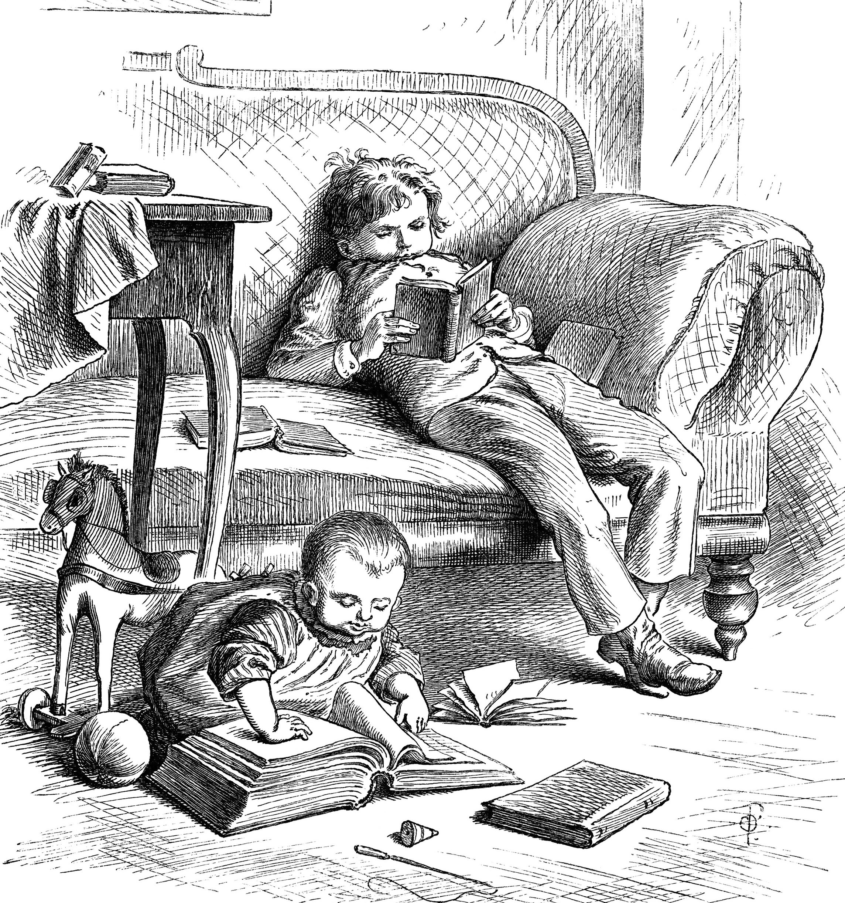

Understanding the TEI Header
The TEI Header
The TEI header was designed with two goals in mind
- needs of bibliographers and librarians trying to document ‘electronic books’
- needs of text analysts trying to document ‘coding practices’ within digital resources
The result is that discussion of the header tends to be pulled in two directions...
The Librarian’s Header
- Conforms to a standard bibliographic model, using similar terminology
- Organized as a single source of information for bibliographic description of a digital resource, with established mappings to other such records (e.g. MARC)
- Emerging code of best practice in its use, endorsed by major digital collections
- Pressure for greater and more exact constraints to improve precision of description: preference for structured data over loose prose
Everyman’s Header
- Gives a polite nod to common bibliographic practice, but has a far wider scope
- Supports a (potentially) huge range of very miscellaneous information, organized in fairly ad hoc ways
- Many different codes of practice in different user communities
- Unpredictable combinations of narrowly encoded documentation systems and loose prose descriptions
The TEI supports two types of header metadata
- corpus metadata sets default properties for everything in a corpus
- text metadata sets specific properties for one component text of a corpus
<teiCorpus
xmlns="http://www.tei-c.org/ns/1.0"> <teiHeader type="corpus">
</teiHeader>
<TEI xmlns="http://www.tei-c.org/ns/1.0">
<teiHeader type="text">
</teiHeader>
<text>
</text>
</TEI>
<TEI xmlns="http://www.tei-c.org/ns/1.0">
<teiHeader type="text">
</teiHeader>
<text>
</text>
</TEI> </teiCorpus>
Types of content in the TEI header
- free prose
- prose description: series of paragraphs
- phrase: character data, interspersed with phrase-level elements, but not paragraphs
- grouping elements: specialised elements recording some structured information
- declarations: elements whose names end with the suffix
Decl (e.g. <editorialDecl>, <refsDecl>) enclose information about specific encoding practices applied in the electronic text. - descriptions: elements whose names end with the suffix
Desc (e.g. <settingDesc>, <projectDesc>) contain a prose description, possibly, but not necessarily, organised under some specific headings by suggested sub-elements.
TEI Header Structure
The TEI header has four main components:
- <fileDesc> (file description) contains a full bibliographic description of an electronic file.
- <encodingDesc> (encoding description) documents the relationship between an electronic text and the source or sources from which it was derived.
- <revisionDesc> (revision description) summarizes the revision history for a file.
- <profileDesc> (text-profile description) provides a detailed description of non-bibliographic aspects of a text, specifically the languages and sublanguages used, the situation in which it was produced, the participants and their setting. (just about everything not covered in the other header elements)
Only <fileDesc> is required; the others are optional.
The File Description
Mandatory components:
- <titleStmt>: contains a mandatory <title> which identifies the electronic file (not its source!)
- optionally followed by additional titles, and by ‘statements of responsibility’, as appropriate, using <author>, <editor>, <sponsor>, <funder>, <principal> or the generic <respStmt>
- <publicationStmt>: may contain
- plain text (e.g. to say the text is unpublished)
- one or more <publisher>, <distributor>, <authority>, each followed by <pubPlace>, <address>, <availability>, <idno>
- <sourceDesc>: may contain
- plain text (e.g. to say the text is ‘born digital’)
- one or more bibliographic descriptions of the source document/s which this file represents (see later)
Which of these should we require for ELTeC?
Title- and Responsibility- statements...
TEI permits a variety of approaches :
<title>Artamene</title>
<title type="alt">Le Grand Cyrus</title>
<title type="sub">Digital Edition</title>
<author>Scudery, Madeleine de</author>
<principal>Geffin, Alexandre</principal>
<funder>Fonds Nationale Suisse de la Recherche Scientifique</funder>
<respStmt>
<resp>Encoding checked</resp>
<name>Jean Untel</name>
</respStmt>
For ELTeC we will require:
- just one main title
- just one main author, using a standardized format
Surname, otherNames (birthYear - deathYear) - All other responsibilities (funding, encoding, correction...) indicated by <respStmt> elements
<titleStmt>
<title>Passages in the life of a fast young lady : ELTeC edition</title>
<author>Grey, Elizabeth Caroline (1798-1869)</author>
<respStmt>
<resp>ELTeC encoding</resp>
<name>Lou Burnard</name>
</respStmt>
</titleStmt>
The publication statement
The TEI permits this to be simple prose or quite complex, with many subcomponents
<publicationStmt>
<publisher>University of Victoria Humanities Computing and Media
Centre</publisher>
<pubPlace>Victoria, BC</pubPlace>
<address>
<addrLine>McPherson Library, Room A316 </addrLine>
<addrLine>3800 Finnerty Road </addrLine>
<addrLine>Victoria BC </addrLine>
<addrLine>V8P 5C2 </addrLine>
<addrLine>Canada</addrLine>
</address>
<date>2011</date>
<availability status="restricted">
<licence target="http://creativecommons.org/licenses/by-sa/3.0/"> Distributed under a Creative Commons Attribution-ShareAlike 3.0
Unported License </licence>
</availability>
</publicationStmt>
For ELTeC, we will provide a structured publication statement in the corpus header, but individual texts will have a simple statement like this:
<publicationStmt>
<p>Published as part of the ELTeC <date>2018-10-19</date>
</p>
</publicationStmt>
The File Description, contd.
Optional components:
- <editionStmt>: yes, electronic texts may have multiple editions, which can be specified using the <edition> tag
- <seriesStmt>: and they may also belong to a ‘series’ or other analytic title
- <extent>: specifies how many floppy disks, gigabytes, files, words make up the resource, using prose or <measure>
- <notesStmt>: contains arbitrary <note>s of various types
For ELTeC we will use only <extent>, with values for unit to be constrained
<extent>
<measure unit="pages">112</measure>
<measure unit="vols">3</measure>
<measure unit="words">34000</measure>
</extent>
The Source Description
Provides a bibliographic description of the source from which the digital text was derived.
Problems:
- The TEI provides four different kinds of ‘standardized bibliographic descriptions’: <bibl>, <biblStruct>, <biblFull> or <msDesc>
- ... and also permits a prose description.
- Although the real source of an ELTeC text may often be a pre-existing digital version, we are most interested in the original print source.
An example sourceDesc
The TEI would permit :
<p>Derived from the Google Books scan of Mrs Caroline Grey's <title>Passages in
the life of a fast young lady</title> (1862).</p>
Or, with more tagging ...
<biblStruct>
<monogr>
<title>Passages in the life of a fast young lady</title>
<author>
<persName>
<forename>Elizabeth</forename>
<forename>Caroline</forename>
<surname>Grey</surname>
<birth>1798</birth>
<death>1869</death>
</persName>
<idno type="VIAF">10207277</idno>
</author>
<imprint>
<publisher>Hirst & Blackett</publisher>
<pubPlace>London</pubPlace>
<date>1862</date>
</imprint>
<extent>Three volumes</extent>
</monogr>
<idno type="BodleyShelfmark">250 f 9b</idno>
<relatedItem type="source">
<bibl>
<title>Passages in the life of a fast young lady</title>
<author>Elizabeth Caroline Grey</author>
<idno url="https://archive.org/details/passagesinlifea02greygoog"/>
<note>Digitized by Google from the library of Oxford University and
uploaded to the Internet Archive by user tpb.</note>
</bibl>
</relatedItem>
</biblStruct>
Suggested ELTeC source description
- Use a <bibl> to supply author, title, publisher, publication date and place of the original source
- Use <idno> to supply URL for e.g. VIAF or Wikidata description when these are available
- Use <relatedItem> to indicate a related digital resource
<bibl>
<title level="m">Passages in the life of a fast young lady</title>
<author>Mrs [Elizabeth Caroline] Grey</author>
<pubPlace>London</pubPlace>: <publisher>Hirst & Blackett</publisher>
<pubdate>1862</pubdate>
<relatedItem type="source">
<ref target="https://archive.org/details/passagesinlifea02greygoog"> Google Books scan from the Internet Archive </ref>
</relatedItem>
</bibl>
<encodingDesc> groups notes about the procedures used when the text was encoded, either summarised in prose or within specific elements such as
- <projectDesc>: goals of the project
- <samplingDecl>: sampling principles
- <editorialDecl>: editorial principals, e.g. <correction>, <normalization>, <quotation>, <hyphenation>, <segmentation>, <interpretation>
- <classDecl>: classification systems used
- <tagsDecl>: specifics about usage of particular elements
The <encodingDesc> can replace the user manual, or facilitate semi-automatic document management, given agreed codes of practice.
As with publication statement, for ELTeC we provide detailed information only in the corpus header. Individual texts will contain a simple statement like the following:
<encodingDesc n="ELTeC-0">
<p/>
</encodingDesc>
The TEI Profile Description
An extensible rag-bag of descriptions, categorised only as ‘non-bibliographic’. Default members of the model.profileDescPart class include:
- <creation>: information about the origination of the intellectual content of the text, e.g. time and place
- <langUsage>: information about languages, registers, writing systems etc used in the text
- <textDesc> and <textClass>: classifications applied to the text by means of a list of specified criteria or by means of a collection of pointers, respectively
- <particDesc> and <settingDesc>: information about the ‘participants’, either real or depicted, in the text
- <handNotes>: information about the hands identified in a manuscript
For ELTeC we will probably require only <langUsage> and <textClass>.
Language usage
The
<langUsage> element is provided to document usage of languages in the text. Languages are identified by ISO-646 codes, with additional modifiers for region or script :
<langUsage>
<language ident="en">English</language>
<language ident="fr">French</language>
<language ident="fr-ch">Swiss French</language>
<language ident="bg">Bulgarian</language>
<language ident="bg-ro">Romanized Bulgarian</language>
</langUsage>
Classification Methods
The TEI <textClass> element provides a classification (by domain, medium, topic...) for the whole of a text expressed in one or more of the following ways:
- using <catRef>
- direct reference to a locally defined (e.g. in the corpus header) category
- using <classCode>
- reference to some commonly agreed and externally defined category (e.g. UDC)
- using <keywords>
- assign arbitrary descriptive terms taken from a bibliographic controlled vocabulary or a tag cloud
There is also a <textDesc> element, which allows for the description of a text in terms of predefined ‘situational parameters’
Situational Parameters
The TEI provides a set of nine such parameters, based on work by Biber et al.: we could define our own.
<textDesc n="novel">
<channel mode="w">print; part issues</channel>
<constitution type="single"/>
<derivation type="original"/>
<domain type="art"/>
<factuality type="fiction"/>
<interaction type="none"/>
<preparedness type="prepared"/>
<purpose type="entertain" degree="high"/>
<purpose type="inform" degree="medium"/>
</textDesc>
ELTeC proposal for text classification
Always indicate the values for the following selection criteria (using<catRef>)
- author sex
- canonicity
- date period
- size
Optionally indicate topics using <keywords>
Consider using <textDesc>
<textClass>
<catRef target="#authorF #canon0 #period3 #size3"/>
</textClass>
<keywords>
<term>marriage</term>
<term>social
class</term>
<term>London</term>
</keywords>
Category definitions
Selection criteria are defined in the corpus header using the <taxonomy>, <category>, and <catDesc> elements.
<taxonomy>
<category xml:id="authorM">
<catDesc>male authorship</catDesc>
</category>
<category xml:id="authorF">
<catDesc>female authorship</catDesc>
</category>
<category xml:id="authorU">
<catDesc>author sex unknown</catDesc>
</category>
<category xml:id="canon0">
<catDesc>non-canonical text</catDesc>
</category>
<category xml:id="canon1">
<catDesc>canonical text</catDesc>
</category>
<category xml:id="period1">
<catDesc>published between 1850 and
1862</catDesc>
</category>
<category xml:id="period2">
<catDesc>published between 1863 and
1875</catDesc>
</category>
<category xml:id="period3">
<catDesc>published between 1876 and
1888</catDesc>
</category>
<category xml:id="size1">
<catDesc>short: 10-20,000
words</catDesc>
</category>
<category xml:id="size2">
<catDesc>medium: 20-30,000
words</catDesc>
</category>
<category xml:id="size3">
<catDesc>long: over 30,000
words</catDesc>
</category>
</taxonomy>
Revision Description
- A list of <change> elements, with mandatory when and optional who attributes.
- Each <change> records a significant stage in the evolution of a document.
- Give the most recent first.
- Intended to complement (not replace!) the version control facilities provided by e.g. github
<revisionDesc>
<change when="2018-03-27" who="#LB"> Revised for Training Workshop</change>
<change when="2018-02-01">Header created</change>
</revisionDesc>
The ELTeC header/s
All of this is subject to further debate in WG1 and WG2... and may well be revised in light of experience!
- The same header elements are available at each level
- However some header elements may be optional at some levels
Work in progress...
Basic template for ELTeC header
<teiHeader type="novelHeader">
<fileDesc>
<titleStmt>
<title>
</title>
<author>
</author>
</titleStmt>
<extent>
</extent>
<publicationStmt>
</publicationStmt>
<sourceDesc>
<bibl>
</bibl>
</sourceDesc>
</fileDesc>
<profileDesc>
</profileDesc>
<revisionDesc>
</revisionDesc>
</teiHeader>
Another example
<teiHeader>
<fileDesc>
<titleStmt>
<title>Howards End : ELTeC edition</title>
<author>Forster, Edward Morgan (1879-1970)</author>
<respStmt>
<resp>ELTeC encoding</resp>
<name>Lou Burnard</name>
</respStmt>
</titleStmt>
<extent>
<measure unit="words">21,0010</measure>
<measure unit="pages">245</measure>
</extent>
<publicationStmt>
<p>Incorporated into the ELTeC <date>2018-02-12</date>
</p>
</publicationStmt>
<sourceDesc>
<bibl>
<author>E.M. Forster</author>
<title>Howards End</title>
<pubPlace>London</pubPlace>
<publisher>Edward Arnold</publisher>
<date>1910</date>
<idno type="wiki">https://www.wikidata.org/wiki/Q1146642</idno>
<relatedItem>
<bibl>
<title>The Project Gutenberg Etext of Howards End, by E.
M. Forster</title>
<ref target="http://www.gutenberg.org/files/2891/2891-h/2891-h.htm">HTML version downloaded on
<date>2017-12-26</date>
</ref>
</bibl>
</relatedItem>
</bibl>
</sourceDesc>
</fileDesc>
<encodingDesc n="ELTeC-0">
<p/>
</encodingDesc>
<profileDesc>
<langUsage>
<language ident="en"/>
</langUsage>
<textClass>
<catRef target="#authorM #canon1 #period5 #size2"/>
</textClass>
</profileDesc>
<revisionDesc>
<change when="2018-04-20">Header made</change>
</revisionDesc>
</teiHeader>
Creating an ELTeC header
Data could be captured in several ways:
- editing a template file in oXygen
- using a predefined form to capture the data
- down-translating from an existing header
Data could be managed/edited/updated :
- using an external database to hold the data and extracting headers as required
- along with each text file
Version control is necessary !
For more information
About TEI:
About TEI in digital libraries:
About ELTeC